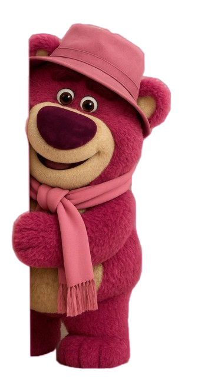

Hati Kamu
0%


Aku tahu aku banyak salah sama kamu. Mungkin kata maaf dari aku belum cukup buat semuanya, tapi aku tetap ingin menyampaikan apa yang selama ini ada di hati aku.
Aku sadar mungkin selama ini aku terlalu sering bikin kamu kecewa. Aku nggak mau cari alasan, aku cuma mau ngaku kalau aku memang salah dan benar-benar nyesel udah nyakitin kamu.

Aku tahu kata maaf nggak akan langsung menghilangkan rasa kecewa kamu. Tapi aku benar-benar ingin memperbaiki semuanya dan membuktikan kalau aku bisa berubah.
Sayang...
Aku benar-benar minta maaf atas semua kesalahan aku. Maaf karena aku pernah bikin kamu kecewa, bikin kamu kepikiran, dan bikin kamu ngerasa nggak cukup dihargai sama aku. Aku sadar, mungkin selama ini aku terlalu sering ngomong “maaf” tanpa benar-benar menunjukkan perubahan yang kamu harapkan.
Aku juga ngerti kalau kamu ingin aku minta maaf secara langsung. Dan jujur, aku juga pengin banget bisa ketemu kamu sekarang, ngobrol langsung, lihat kamu, dan menyampaikan semuanya tanpa lewat chat. Tapi untuk sekarang kita harus terpisah jauh. Aku di Kalimantan dan kamu di Jawa, jadi mungkin kita harus menunggu cukup lama sampai akhirnya bisa ketemu lagi.
Aku nggak tahu nanti setelah sekian lama keadaan kita akan seperti apa. Tapi satu hal yang aku tahu, aku nggak mau menyia-nyiakan kesempatan yang masih kamu kasih. Aku akan belajar dari semua kesalahan aku dan berusaha jadi seseorang yang lebih baik.
Kalau nanti waktunya tiba dan kamu masih mau membuka hati untuk aku, aku ingin kita mulai lagi. Pelan-pelan.
Tolong selama aku masih jauh, jaga diri kamu baik-baik ya. Aku tahu aku nggak punya hak buat ngatur kamu, apalagi sekarang keadaan kita seperti ini.
Tapi kalau boleh aku minta satu hal...
Tolong tunggu aku. Jangan buru-buru buka hati kamu buat orang lain.
Aku juga akan berusaha menjaga hati aku selama kita berjauhan. Aku cuma berharap, nanti ketika waktunya kita ketemu, perasaan kita masih sama dan kita masih punya kesempatan buat memperbaiki semuanya.
Aku mungkin jauh dari kamu, tapi niat aku buat kembali ke kamu tetap ada. ❤️

Terima kasih ya, udah mau baca semuanya sampai selesai. Aku nggak tahu setelah ini kamu bakal gimana, tapi aku berharap masih ada sedikit ruang buat aku di hati kamu. Aku bakal tetap berusaha memperbaiki diri dan menunggu sampai kita bisa ketemu lagi. Semoga saat hari itu tiba, kita masih bisa duduk berdua, ngobrol baik-baik, dan memperbaiki semuanya yang pernah rusak. ❤️